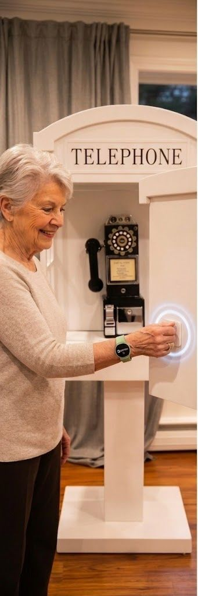

The headline statistic has been repeated so often it feels mythic. We tracked down the meta-analysis, and the real story is stranger than the soundbite.

The standard opener gets a three-word answer. Here are six better ones — and the kind of conversations they tend to open up.

A hallway, a donated bench, and three iterations later, we had a piece of furniture residents with memory loss actually use.
An 82-year-old in Vermont taught us more about memory-aware dialogue than six months of transcripts ever could. A small portrait.

How we tuned cadence, pauses, and turn-taking to feel like a thoughtful friend rather than an assistant waiting to be asked for the weather.
Solitude is a need. Loneliness is a wound. Conflating them is how well-meaning products end up intrusive.
We send a short note to family members after every call. Here's the editorial rubric we use — and the three temptations we try hardest to avoid.
Even at excellent long-term care communities, residents get < 4 minutes of 1:1 conversation a day. We did the arithmetic, and then we did something about it.

A short note from a Thursday afternoon in December. On routines, nostalgia, and why the best fix is sometimes the obvious one done well.
No life hacks, no pop-ups. Just a couple of essays, a quote worth keeping, and a small something we're working on. Unsubscribing is one click.